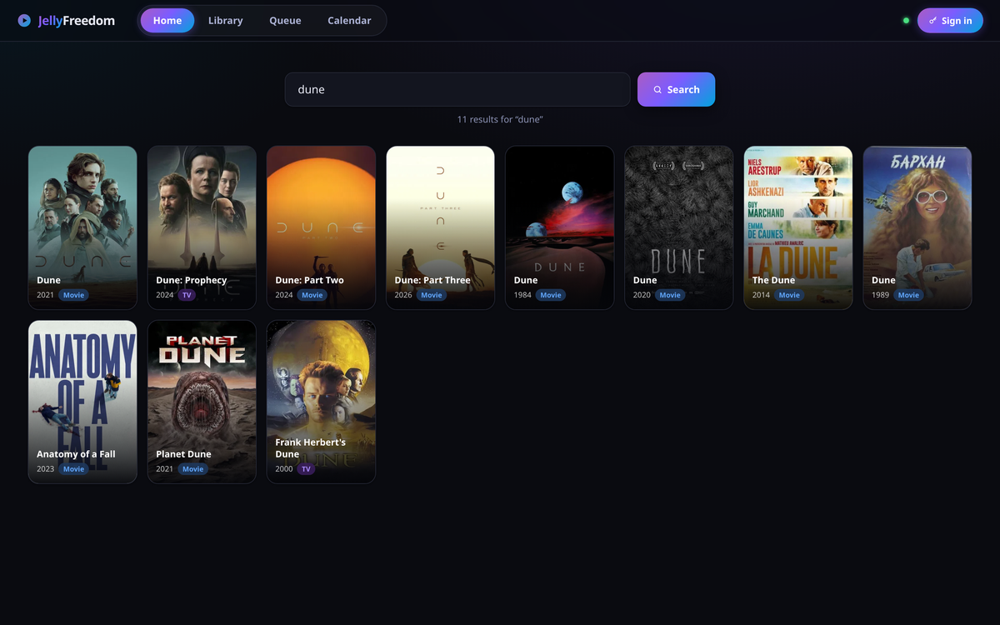
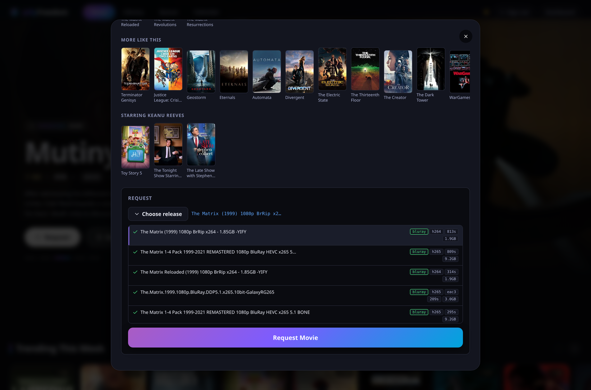
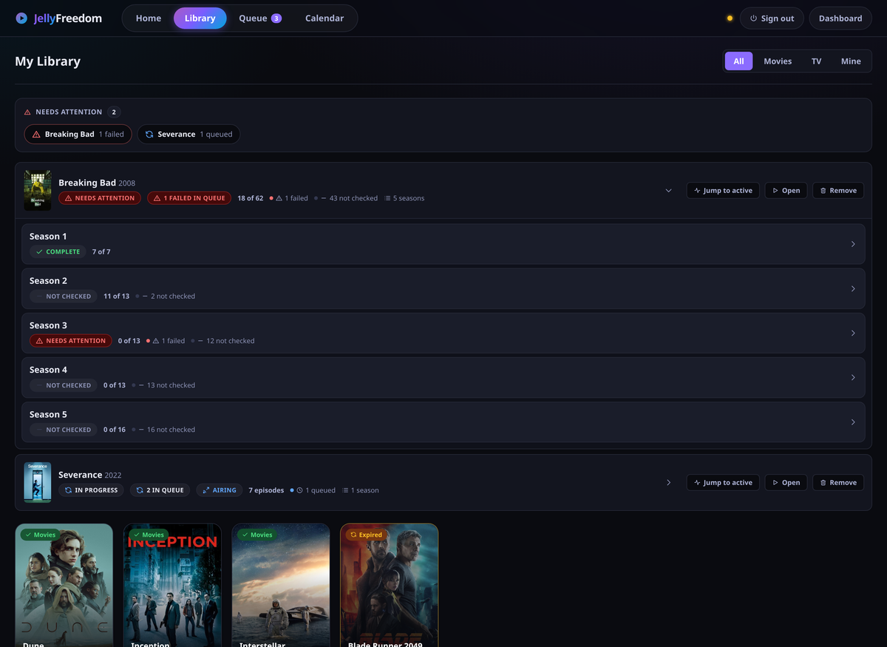
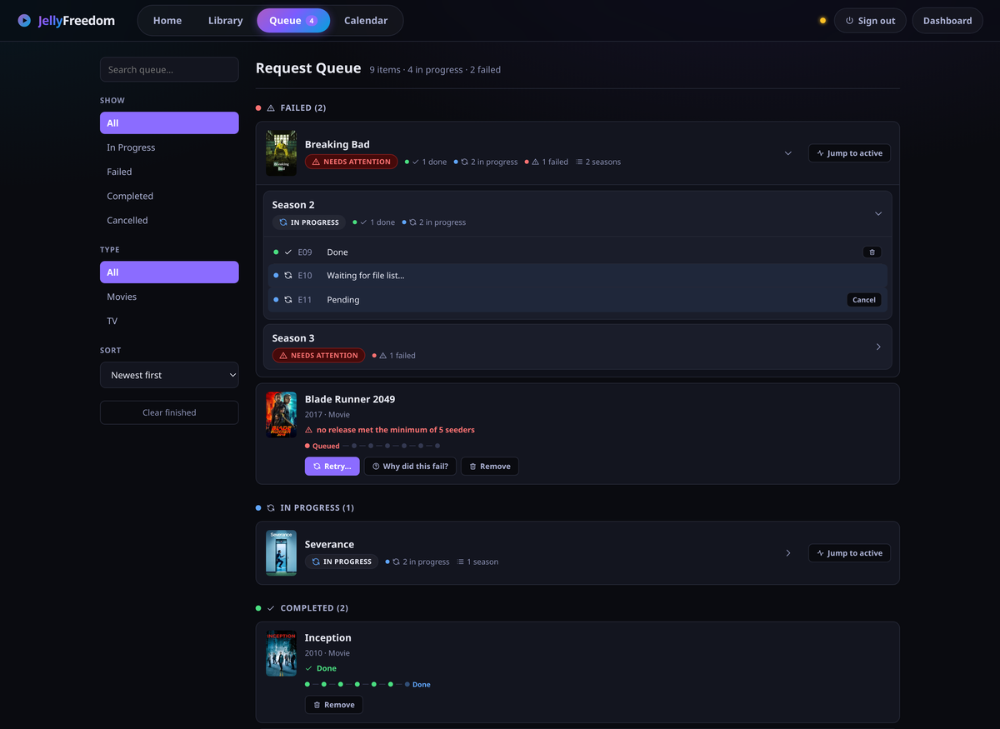
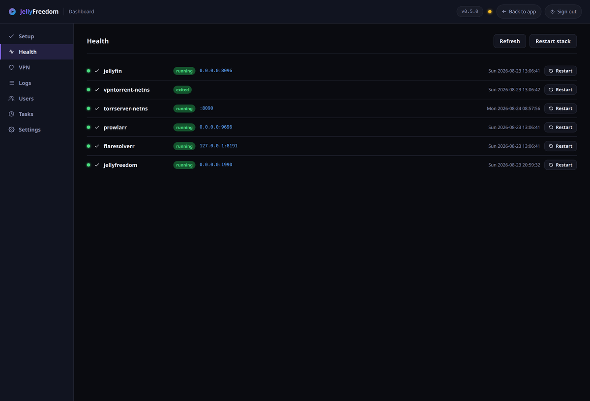

Search, pick the file you want, press play. It appears in your Jellyfin library and streams on demand — on your TV, your phone, your browser — without ever filling up your disk.
You bring the sources. JellyFreedom has no catalogue of its own: it looks only where you tell it to, and plays only what you choose.
Debian or Ubuntu. Sets up everything for you, and leaves anything you already have alone.
curl -fsSL https://github.com/MoonTheRipper/JellyFreedom/releases/latest/download/get.sh | sudo bash
Then open http://<your-server>:1990/dashboard/, create your account, and upload a WireGuard file from whichever VPN you use. Until you do, nothing will transfer at all — that is deliberate.
Real screenshots — nothing here is a mockup.
Type a name, pick the right title. Cover art and descriptions come from TMDB.

Every option shows its quality, video and audio format, size, and how many people are sharing it, so you can tell a good one from a bad one at a glance. Leave it alone and a sensible choice is made for you.

Shows open into seasons, seasons into episodes. A show that is still airing says “Up to date”, never “Complete” — so you notice when the next episode lands.

The queue is a tree too, and anything that needs you sorts to the top.

Every row links straight to the thing that fixes it.

Built for the living room, and for staying private.
Jellyfin is the app you actually watch in, so your Apple TV, phone, tablet and browser all just work. There is no extra app to install.
Only the part you are watching is held, in memory, with a hard size limit. Watch one film or a hundred — disk usage does not move.
That traffic can only leave through your VPN. If the tunnel drops, it stops dead rather than falling back to your normal connection. Checked every minute.
Links point at the title, not at one particular copy. If whoever was sharing it disappears, the next play just finds another one.
Search, a queue, a file picker and a calendar for everyone in the house — plus an admin side for health, VPN files, accounts and settings.
Plain programs and normal system services. Bring a WireGuard file from any provider, or run your own.
Four steps, and you only do the first one.
It looks in the places you added and shows you what is there, with quality and size for each.
Either you choose, or it takes the best one — favouring files that play without your TV having to work hard.
The title shows up in your Jellyfin library straight away, ready to play.
Press play on any device. It streams while you watch and lets go when you stop.